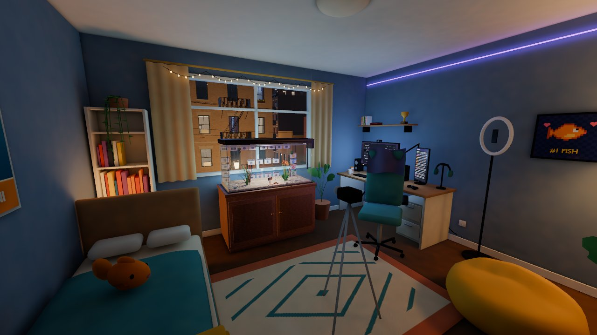
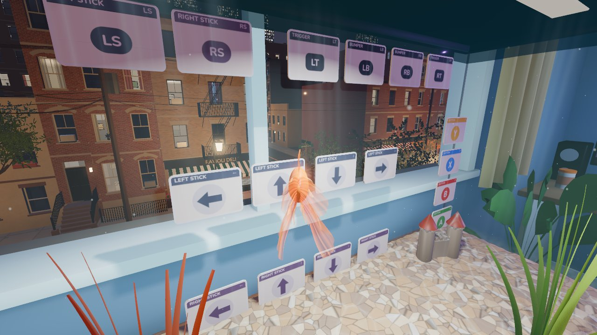
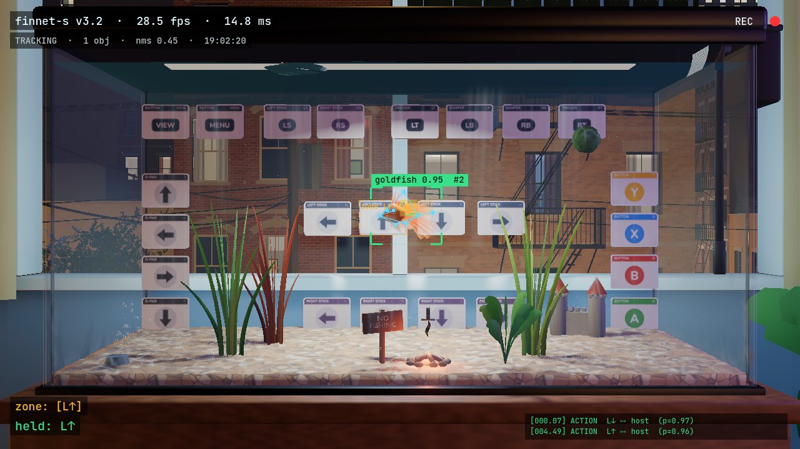

Linguini
Fish can do anything.

Linguini lets you play your PC games as a goldfish. Swimming in front of a flash card in your tank presses that button in the game, which plays on a monitor across the room. Any game your PC can stream over Moonlight works, from either Sunshine or GeForce Experience, though you will need to install Linguini on a separate machine from your game host.
Inspired by Tortellini, the fish who conquered Elden Ring.

